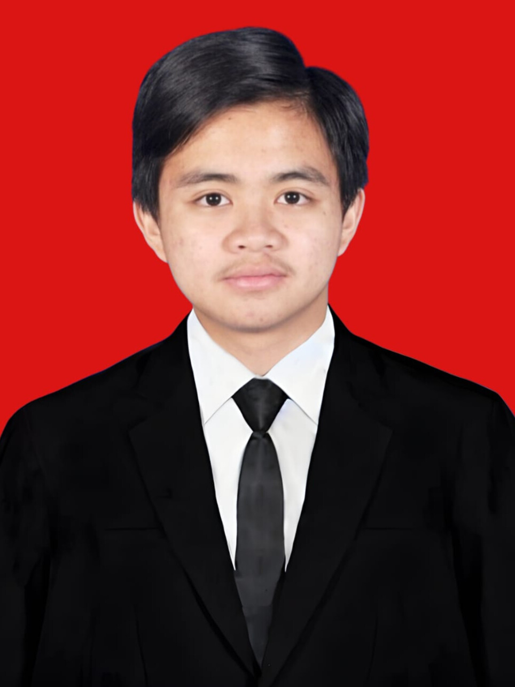

AR

I build backends that hold up, and interfaces people enjoy using.
Web & backend developer working with Laravel and Golang on the server, Vue.js or React on the front, and Flutter for mobile apps. I take on independent projects, keep sharpening my craft, and contribute to open-source along the way.
Drag to rotate
{
"name": "Ahmad Rizal E.S",
"role": "Web & Backend Developer",
"backend": ["Laravel", "Golang"],
"frontend": ["Vue.js", "React"],
"mobile": ["Flutter"],
"database": "MySQL"
}What I work with
Backend is where I spend most of my time. I add enough frontend, mobile, and design-system skill to take a feature from database to screen, on the web or on a phone.
Backend
- Laravel
- Golang
- API Programming
- MySQL
Frontend
- Vue.js
- React.js
- Tailwind CSS
Mobile
- Flutter
Design
- Design System
Always learning
I keep improving my skills with every project I take on.
Open-source minded
I like giving back to the communities whose tools I rely on.
Quality in every project
Clean code, clear APIs, and details that hold up after launch.
Have a project in mind? Let's talk.
Message me on LinkedIn, or look through my code on GitHub.
© 2026 Ahmad Rizal E.S